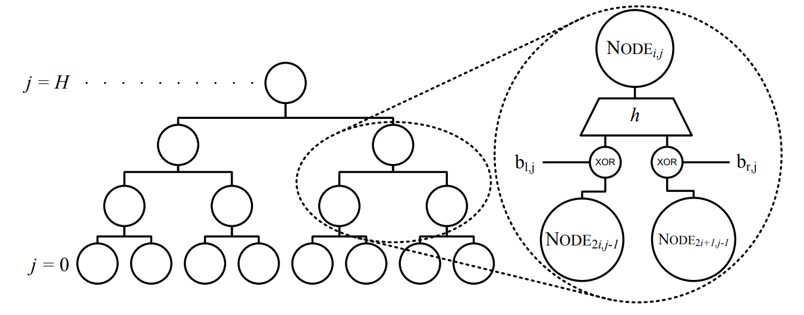

The ethical privacy-preserving digital payment system
Slides @ e.pioldi.net/ taler-intro
Elisa Pioldi - Security in Times of Surveillance
Why Taler?
Traceability
Profiling
Sensitive data exposure


Is it so "easy"...?
Frauds
Black-mailing
Deregulation
Money laundering
We live in a real world
...and real world has rules
Customer
Asymmetric privacy
Merchant
Taler's goals
Customer's anonymity
Identified merchants (easily taxable)
Anti-money laundering (AML)
Ideal to be used as a digital currency
...but not only
...but not only
Vouchers
Loyalty cards
Online age verification
Streaming service subscriptions
Deployed in real world!
Switzerland only (for now)
How does Taler “electronic cash” work?
A bit of cryptography
Blind Signatures (e-cash)
Blind Signatures (e-cash)
Blind Signatures (e-cash)
Coins in Taler
Withdrawing coins
Withdrawing coins
Withdrawing coins
Payment and Change
Payment and Change
Payment and Change
Change requirements
Anonymity
Spent coins and change must be unrelated
Anti-money laundering
Change ownership cannot be transferred
Money-laundering in Taler
?
Money-laundering in Taler
?
Fixing
Money-laundering in Taler
Change requirements (part 2)
Anonymity
No one (except coin's owner) can correlate spent coins and change
Anti-money laundering
An owner can always re-obtain change from their coins
How?
Refresh protocol
Refresh protocol
Refresh protocol
Cut-and-choose
Refresh Derive
Refresh Derive
With cut-and-choose the Exchange makes sure that planchets are generated in this exact way
With an open commitment the Customer reveals
to the Exchange
Post-quantum refresh
What's the current problem?
Refresh protocol exploits ability of Ed25519 keys to do Curve25519 ECDH
Not available in PQ
... But we need to keep signatures
The idea
Is this all..?
The coin owner must be always able to generate this signature
t-unique signatures
The set of possible valid signatures for a fixed message-pk pair is bound by some constant t
Post-quantum
t-unique signatures
?
